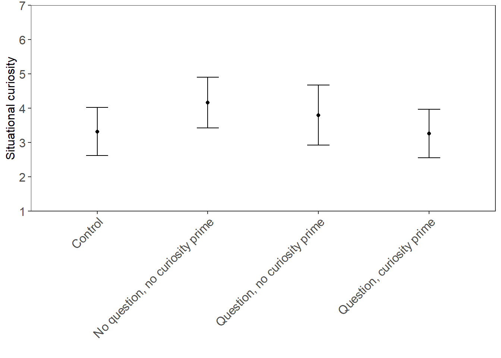
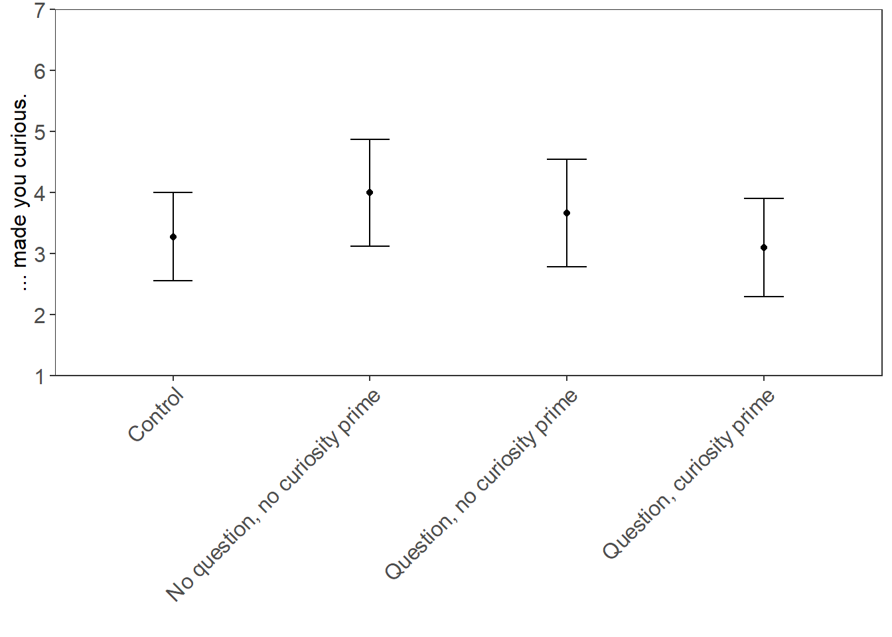
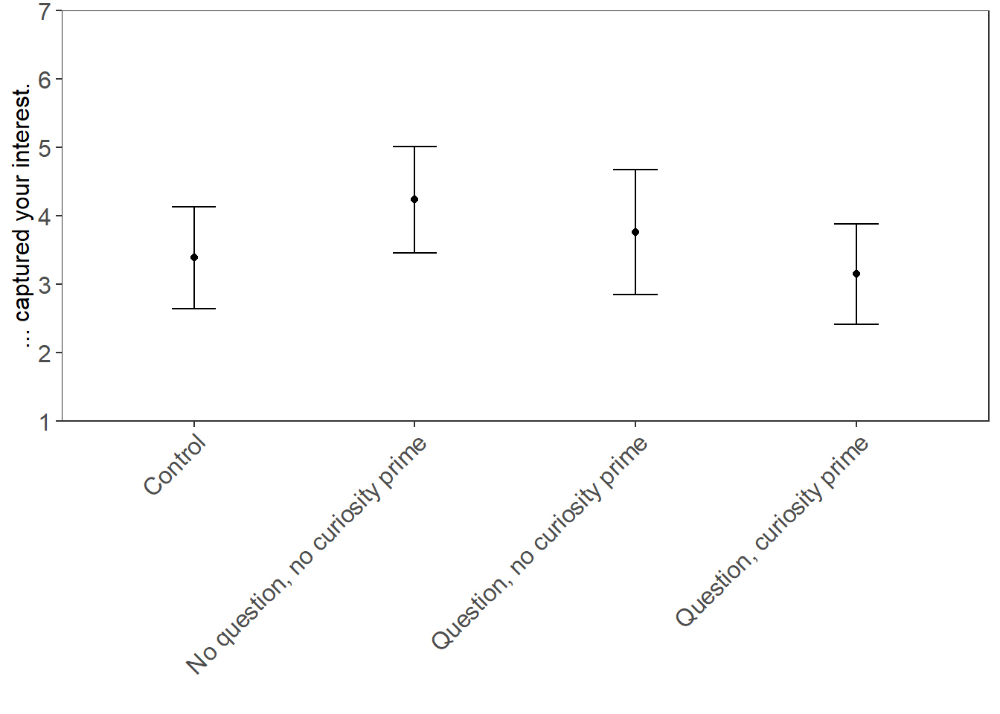
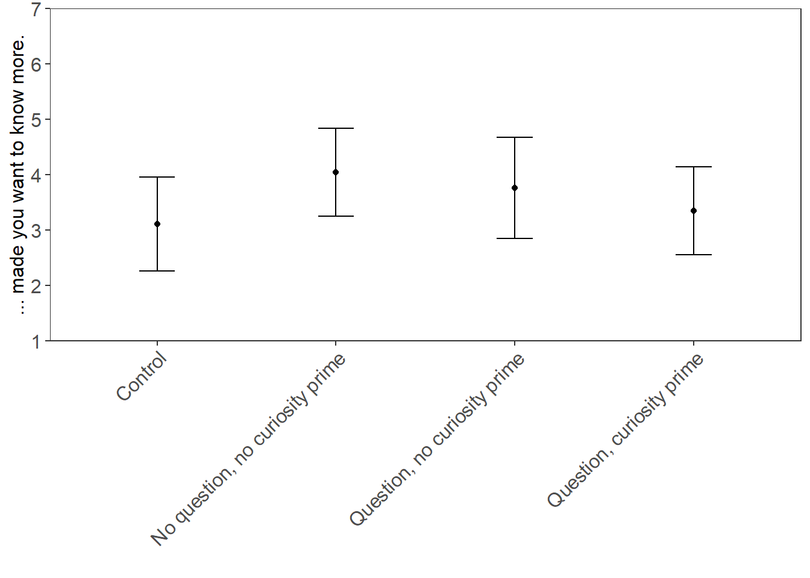

| Freq | % Valid | % Valid Cum. | % Total | % Total Cum. | |
|---|---|---|---|---|---|
| Control | 18 | 22.5 | 22.5 | 22.5 | 22.5 |
| No question, no curiosity prime | 21 | 26.2 | 48.8 | 26.2 | 48.8 |
| Question, no curiosity prime | 21 | 26.2 | 75.0 | 26.2 | 75.0 |
| Question, curiosity prime | 20 | 25.0 | 100.0 | 25.0 | 100.0 |
| Total | 80 | 100.0 | 100.0 | 100.0 | 100.0 |
Curiosity Project: Student Pilot Data Analysis
The raw data from the student pilot test contained 105 responses. 22 of the responses were removed because they were missing names and student ID numbers. An additional 3 responses were removed because they were either Mike or nonsensical responses to the question asking for student names (Q30_1) or student IDs (Q30_2). The final sample size is 80 respondents.
1 Experimental Conditions
The random assignment to conditions appears to have worked fine. The number of respondents per condition ranged from 18 to 21 (Table 1).
The manipulation check for the question showed that respondents who were exposed to a stimulus that contained a question were significantly more likely to answer “Yes” to Q24 (“Did the meme you just viewed contain a question?”; Table 2). Note that the control condition did not contain a question.
| Control | No question, no curiosity prime | Question, no curiosity prime | Question, curiosity prime | |
|---|---|---|---|---|
| No | 16 | 17 | 6 | 6 |
| Yes | 2 | 4 | 15 | 14 |
2 Situational Curiosity
Cleaned the items Q25_1 through Q25_4 and determined the Cronbach’s alpha (\(\alpha = .95\)). Did not run a factor analysis since the correlation matrix showed high significant (\(p < .001\)) inter-item correlations ranging from \(0.74\) to \(0.89\). Combined items in a mean index (\(M = 3.65\), \(SD = 1.65\)).
There were no significant differences in the mean of situational curiosity across conditions (Figure 1).

Examined the cleaned versions of the individual items (Q25_1c thru Q25_4c).


